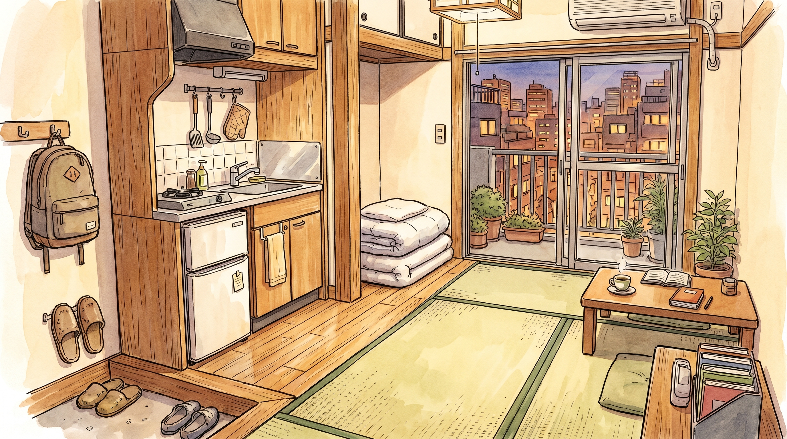

Cost of Living in Japan: A Realistic Breakdown for IT Engineers
Moving to Japan as an IT engineer is a major step, and one of the most frequently asked questions is: "How much does it actually cost to live there?" This article provides a realistic picture based on firsthand experience, not numbers from tourist brochures. All prices are in Japanese Yen (JPY), with approximate USD conversions for reference.
General Expenses (All Cities)
Before diving into the differences between cities, here are some expense categories that are relatively consistent no matter where you live in Japan:
- Food: ¥30,000–50,000/month (~$200–330). Cooking at home is significantly cheaper. A 5 kg bag of rice costs about ¥2,000, and vegetables and meat at supermarkets are competitively priced. If you eat lunch out, budget around ¥600–1,000 per meal — Yoshinoya, Matsuya, or konbini bento are staples for many engineers.
- Transportation: ¥8,000–15,000/month with a commuter pass (定期券). Most companies cover this cost, but it's still important to understand. Use an IC Card (ICOCA in Kansai, Suica in Kanto) for convenient cashless payments everywhere.
- Utilities: ¥8,000–15,000/month (electricity, gas, water). Winter (December–February) is significantly more expensive due to heating. Summer also rises because of air conditioning, but not as drastically as winter.
- Internet + Mobile: ¥5,000–8,000/month. Home fiber internet costs about ¥4,000–5,000. For SIM cards, budget carriers like IIJmio, Rakuten Mobile, and Mineo offer data plans starting at ¥1,000/month — far cheaper than major carriers like Docomo or SoftBank.
Rent & Total Cost Comparison by City
Below is a cost-of-living comparison across five major Japanese cities popular among IT engineers. Rent is based on a 1K apartment (one room + small kitchen), the most common type for single professionals.
Tokyo IT Hub #1
1K Rent: ¥80,000–165,000/month
Total cost of living: ¥200,000–300,000/month (~$1,330–2,000)
The largest IT hub in Japan. Most tech companies — from startups to giants like Mercari, LINE, and SmartNews — are based here. Highest salaries, but also the highest cost of living. Areas like Shibuya and Roppongi are very expensive; consider Kita-Senju, Nerima, or Kawasaki for more affordable rent while still maintaining a reasonable commute.
Osaka Best Value
1K Rent: ¥45,000–80,000/month
Total cost of living: ¥100,000–170,000/month (~$660–1,130)
Japan's second-largest city with a cost of living far lower than Tokyo. A rapidly growing tech ecosystem with companies like Panasonic, Sharp, and local startups. Legendary street food — takoyaki and okonomiyaki are cheap and delicious. Osaka residents are known for being friendly and welcoming to foreigners.
Nagoya
1K Rent: ¥45,000–60,000/month
Total cost of living: ¥130,000–180,000/month (~$860–1,200)
Japan's manufacturing-tech hub, dominated by the Toyota ecosystem and automotive suppliers. Many embedded systems and IoT positions available. A well-organized and clean city with very reasonable living costs. Strategically located — two hours from Tokyo and one hour from Osaka by shinkansen.
Fukuoka Startup Hub
1K Rent: ¥40,000–65,000/month
Total cost of living: ¥120,000–170,000/month (~$800–1,130)
Japan's fastest-growing startup hub. The city government actively supports the startup ecosystem with its Startup Visa program and coworking spaces. The airport is just 5 minutes from downtown. Fresh food (especially ramen and seafood) at affordable prices. A solid international community despite being a smaller city.
Sapporo
1K Rent: ¥36,000–50,000/month
Total cost of living: ¥100,000–150,000/month (~$660–1,000)
The lowest cost of living among the five cities, but keep in mind: winters are extremely cold (temperatures can drop to -10°C) and heating costs are significant. The IT ecosystem is smaller, but remote work opens up the possibility of living here on a Tokyo-level salary. Beautiful nature and high quality of life for those who enjoy winter.
Finding an Apartment as a Foreigner
Finding housing in Japan can be quite challenging, especially for newcomers. Here is a practical guide:
- Leverage your company's support. Many IT companies in Japan provide relocation support, including help finding an apartment, acting as a guarantor, or even providing company housing for the first few months. Ask about this during the hiring process.
- Search platforms: Suumo.jp, Homes.co.jp, Chintai.net — use the "外国人可" (gaijin-ka, meaning "foreigners accepted") filter to avoid wasting time on listings that reject foreign tenants.
- Upfront costs: Be prepared for a large initial outlay. Shikikin (敷金, security deposit) is 1–2 months' rent, reikin (礼金, a "thank-you" payment to the landlord) is 0–2 months, plus agency fees. The total comes to roughly ¥200,000–400,000 (~$1,330–2,660) depending on rent.
- Guarantor: Landlords typically require a guarantor. Nowadays, many accept a 保証会社 (hoshougaisha, a guarantor company) in place of a personal guarantor. The fee is approximately 50–100% of one month's rent, paid once upon move-in.
Areas like Higashiyodogawa, Tsurumi, and around Namba offer 1K apartments for ¥50,000–70,000/month — very affordable for a city the size of Osaka. Train access to the business district is also excellent.

After Work & Work-Life Balance
Living in Japan isn't just about work. Here are some things that make daily life more enjoyable:
- Free exercise: Riverside paths in Japanese cities are excellent for running or cycling. In Osaka, the Yodo-gawa and Yamato-gawa riverside paths are popular among runners. Tokyo has the Imperial Palace loop and the Tama River trail.
- Supermarkets offer deep discounts after 7–8 PM. Bento boxes, sushi packs, and prepared meals can be found at 20–50% off. Look for the yellow discount stickers with marked-down prices — this is a money-saving secret known to every local resident.
- Weekend exploration: Explore the city, visit temples, parks, or local festivals. Japan has something for every season. Connecting with expat communities is also a great way to combat homesickness.
- The time difference with the US East Coast is 13–14 hours, so plan accordingly for calls with family and friends back home. Morning calls in the US work well for evening chats in Japan.
Expat Communities in Japan
Don't worry about feeling alone. The expat community in Japan is sizable and active:
These communities can help with many things — from recommendations for English-speaking doctors and international grocery stores to tips on navigating immigration paperwork. Don't hesitate to join even before you move to Japan.
Tips for Work-Life Balance
The stereotype about extreme working hours in Japan has some basis in reality, but the IT industry tends to be more flexible. Here are tips for maintaining balance:
- Take your paid leave (有給休暇, yuukyuu kyuuka). By law, employees with 6 months of tenure receive a minimum of 10 days of paid leave per year, and are required to take at least 5 days. Don't feel guilty — this is a right protected by Japanese labor law.
- Lunch breaks are respected. Many offices in Japan have a strong lunch-break culture (昼休み, hiruyasumi), typically lasting 1 hour. Some people even take short power naps (inemuri). Use this time to genuinely rest and recharge.
- Set clear boundaries after work hours. Especially at foreign-affiliated companies or startups, a "no overtime" culture is becoming increasingly common. Don't be afraid to log off on time. If your company still expects unpaid overtime, that's a red flag — and there are plenty of other options in Japan's current IT job market.
Comments
0 comments